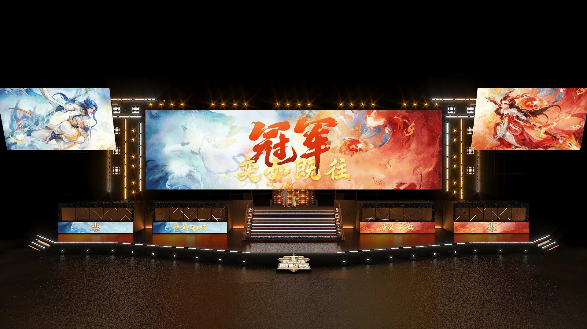
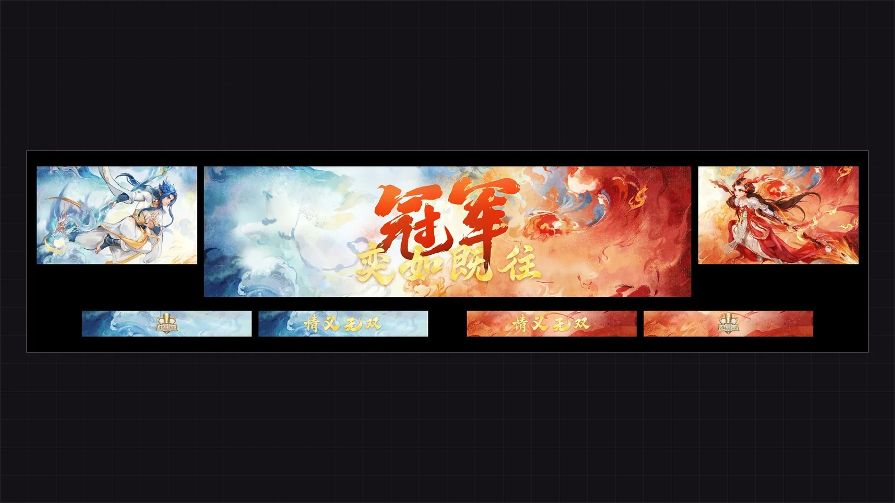

Large-Screen Visuals / 赛事大屏
《全明星街球派对》
DCDG 全球冠军赛
以环形 LED 主视觉作为舞台核心，围绕球场动势建立整场赛事的大屏视觉语言，让环屏、灯带与地屏在同一套节奏里延伸到现场每一个镜头。
同一座舞台，换不同的内容

素材待补
放入 16:9 图片即可生效

素材待补
放入 16:9 图片即可生效
项目背景
DCDG 全球冠军赛是《全明星街球派对》的线下赛事舞台。场地采用环形 LED 主屏加环绕灯带的结构，观众席与直播机位围绕球场分布，视觉需要在任意角度、任意镜头切换中都保持完整。
我的工作
负责大屏视觉设计与舞台视觉呈现：环形主视觉的构图与节奏、灯带与地屏的画面延展，以及与灯光、舞美的整体配合。核心画面要在暗场环境中既撑得住直播画面，又不与球场灯光抢主体。
设计思路
以篮球运动的动势作为主线。环形主视觉围绕球场中心展开，用高饱和的紫、橙、蓝在暗场中拉开层次；灯带以放射状线条把中心能量向外延展，形成视觉纵深；地屏与主屏共用同一套色阶与运动节奏，让镜头从主屏摇到地面时不出现断裂。